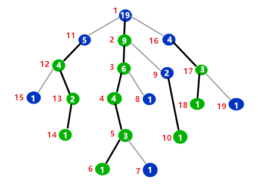
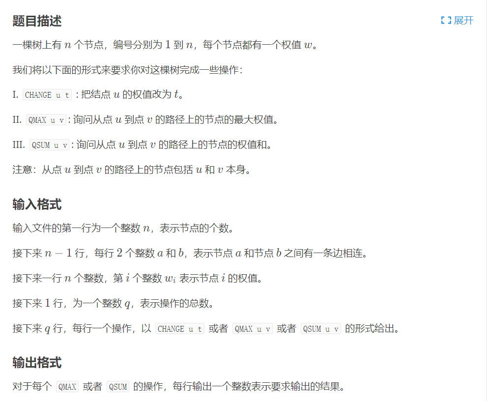

重链剖分
重链剖分是树链剖分的一种，将一棵树分为多条链，组合成一个线性结构，然后用数据结构维护树上的信息，如
- 查询树上两点的路径的权值和
- 修改树上两点的路径的权值
可以用线段树等数据结构来维护。
定义
- 重子结点：一个结点的子结点中子树最大的子结点，如果有多个，取任意一个
- 轻子结点：除了重子结点意外的所有结点
- 重边：从这个结点到重子结点的边
- 轻边：除了重边的所有边
- 重链：由若干条重边首尾相连的路径

如图所示，绿色结点表示重子结点，蓝色结点表示轻子结点，结点内的数字表示子树大小，红色数字表示dfs序，黑色边表示重边，灰色边表示轻边。在标记dfs序时，我们优先访问重子结点，然后再访问轻子结点，可以看到，同一重链上的dfs序是连续的，同一颗子树的dfs序也是连续的。
实现
重链剖分需要记录以下的东西
- $fa $表示结点$x$的父亲
- $dep $表示$x$结点的深度
- $sz $表示$x$结点的子树大小
- $hson $表示结点$x$的重子结点
- $top $表示结点$x$所在重链的顶部结点
- $dfn $表示结点$x$的$dfs$序
- $rnk $表示结点$dfs$序所对应的结点编号，即$rnk[dfn ] = x$
因为我们标记$dfs$序需要先访问重子结点，所以重链剖分需要两次DFS
第一次DFS我们可以记录下$fa[x], dep[x], sz[x], hson[x]$
int dfs1(int now) {
hson[now] = -1;
sz[now] = 1;
for (int i = head[now]; i; i = edge[i].nxt) {
int v = edge[i].to;
if (!dep[v]) {
dep[v] = dep[now] + 1;
fa[v] = now;
dfs1(v);
sz[now] += sz[v];
if (hson[now] == -1 || sz[v] > sz[hson[now]]) hson[now] = v;
}
}
return sz[now];
}
第二次DFS我们可以记录下$top[x], dfn[x], rnk[x]$
void dfs2(int now, int t) {
top[now] = t;
dfn[now] = ++tot;
rnk[tot] = now;
if (hson[now] == -1) return;
dfs2(hson[now], t);
for (int i = head[now]; i; i = edge[i].nxt) {
int v = edge[i].to;
if (v != hson[now] && v != fa[now]) dfs2(v, v);
}
}
洛谷P2590 树的统计

我们将树重链剖分后，用线段树来维护修改和查询信息。
#include<bits/stdc++.h>
using namespace std;
typedef long long ll;
typedef unsigned long long ull;
typedef pair<int, int> P;
#define inf 0x3f3f3f3f
#define INF 0x3f3f3f3f3f3f3f3f
#define IO ios::sync_with_stdio(0)
#define DEBUG(x) cout<<"--->"<<(x)<<endl;
const ll mod = 998244353;
const double eps = 1e-9;
const double PI = acos(-1);
const int maxn = 3e4 + 5;
int n, tot, totedge = 1;
int a[maxn], head[maxn];
int sz[maxn], dfn[maxn], hson[maxn], top[maxn], fa[maxn], dep[maxn], rnk[maxn];
struct Egde {
int to, nxt;
}edge[maxn<<1];
void addedge(int u, int v) {
edge[totedge].to = v;
edge[totedge].nxt = head[u];
head[u] = totedge++;
}
struct SegmentTree {
int sum[maxn<<2], mx[maxn<<2];
void build(int p, int l, int r) {
if (l == r) {
sum[p] = mx[p] = a[rnk[l]];
return;
}
int mid = (l + r) >> 1;
build(p<<1, l, mid);
build(p<<1|1, mid + 1, r);
sum[p] = sum[p<<1] + sum[p<<1|1];
mx[p] = max(mx[p<<1], mx[p<<1|1]);
}
void update(int p, int l, int r, int pos, int v) {
if (l == r) {
sum[p] = mx[p] = v;
return;
}
int mid = (l + r) >> 1;
if (pos <= mid) update(p<<1, l, mid, pos, v);
else update(p<<1|1, mid + 1, r, pos, v);
sum[p] = sum[p<<1] + sum[p<<1|1];
mx[p] = max(mx[p<<1], mx[p<<1|1]);
}
int getsum(int p, int l, int r, int x, int y) {
if (x <= l && r <= y) {
return sum[p];
}
int res = 0;
int mid = (l + r) >> 1;
if (x <= mid) res += getsum(p<<1, l, mid, x, y);
if (y > mid) res += getsum(p<<1|1, mid + 1, r, x, y);
return res;
}
int getmx(int p, int l, int r, int x, int y) {
if (x <= l && r <= y) {
return mx[p];
}
int mid = (l + r) >> 1;
int res = -inf;
if (x <= mid) res = max(res, getmx(p<<1, l, mid, x, y));
if (y > mid) res = max(res, getmx(p<<1|1, mid + 1, r, x, y));
return res;
}
}st;
int dfs1(int now) {
hson[now] = -1;
sz[now] = 1;
for (int i = head[now]; i; i = edge[i].nxt) {
int v = edge[i].to;
if (!dep[v]) {
dep[v] = dep[now] + 1;
fa[v] = now;
dfs1(v);
sz[now] += sz[v];
if (hson[now] == -1 || sz[v] > sz[hson[now]]) hson[now] = v;
}
}
return sz[now];
}
void dfs2(int now, int t) {
top[now] = t;
dfn[now] = ++tot;
rnk[tot] = now;
if (hson[now] == -1) return;
dfs2(hson[now], t);
for (int i = head[now]; i; i = edge[i].nxt) {
int v = edge[i].to;
if (v != hson[now] && v != fa[now]) dfs2(v, v);
}
}
int querysum(int x, int y) {
int res = 0, fx = top[x], fy = top[y];
while (fx != fy) {
if (dep[fx] >= dep[fy]) {
res += st.getsum(1, 1, n, dfn[fx], dfn[x]);
x = fa[fx];
} else {
res += st.getsum(1, 1, n, dfn[fy], dfn[y]);
y = fa[fy];
}
fx = top[x];
fy = top[y];
}
if (dfn[x] < dfn[y]) res += st.getsum(1, 1, n, dfn[x], dfn[y]);
else res += st.getsum(1, 1, n, dfn[y], dfn[x]);
return res;
}
int querymx(int x, int y) {
int res = -inf, fx = top[x], fy = top[y];
while (fx != fy) {
if (dep[fx] >= dep[fy]) {
res = max(res, st.getmx(1, 1, n, dfn[fx], dfn[x]));
x = fa[fx];
} else {
res = max(res, st.getmx(1, 1, n, dfn[fy], dfn[y]));
y = fa[fy];
}
fx = top[x];
fy = top[y];
}
if (dfn[x] < dfn[y]) res = max(res, st.getmx(1, 1, n, dfn[x], dfn[y]));
else res = max(res, st.getmx(1, 1, n, dfn[y], dfn[x]));
return res;
}
int main() {
// freopen("in.txt", "r", stdin);
scanf("%d", &n);
for (int i = 1; i < n; i++) {
int u, v;
scanf("%d%d", &u, &v);
addedge(u, v);
addedge(v, u);
}
for (int i = 1; i <= n; i++) scanf("%d", &a[i]);
dep[1] = 1;
dfs1(1);
dfs2(1, 1);
st.build(1, 1, n);
int q;
scanf("%d", &q);
while (q--) {
char op[50];
int u, v;
scanf("%s%d%d", op, &u, &v);
if (op[0] == 'C') st.update(1, 1, n, dfn[u], v);
else if (op[1] == 'M') printf("%d\n", querymx(u, v));
else printf("%d\n", querysum(u, v));
}
return 0;
}